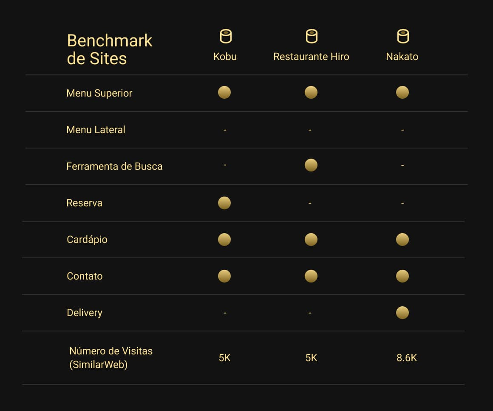
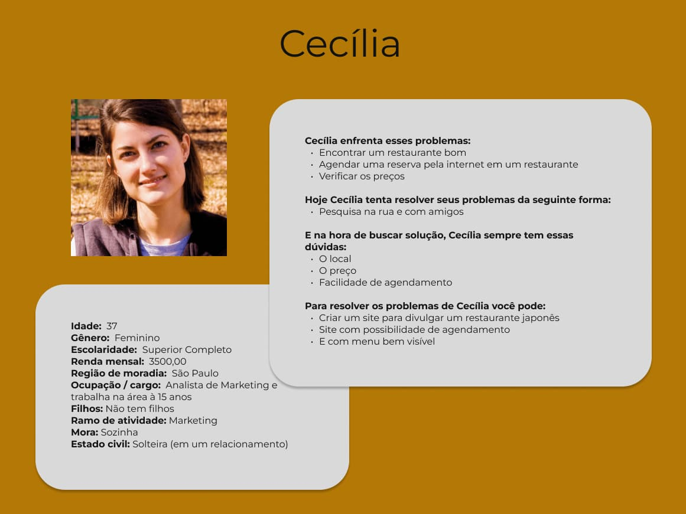
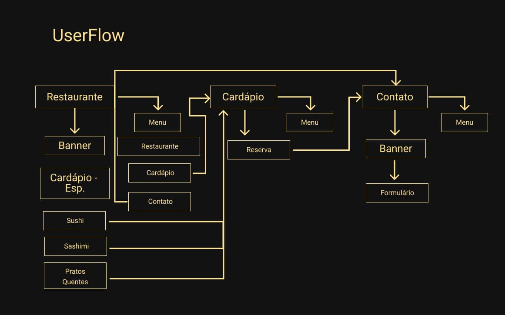
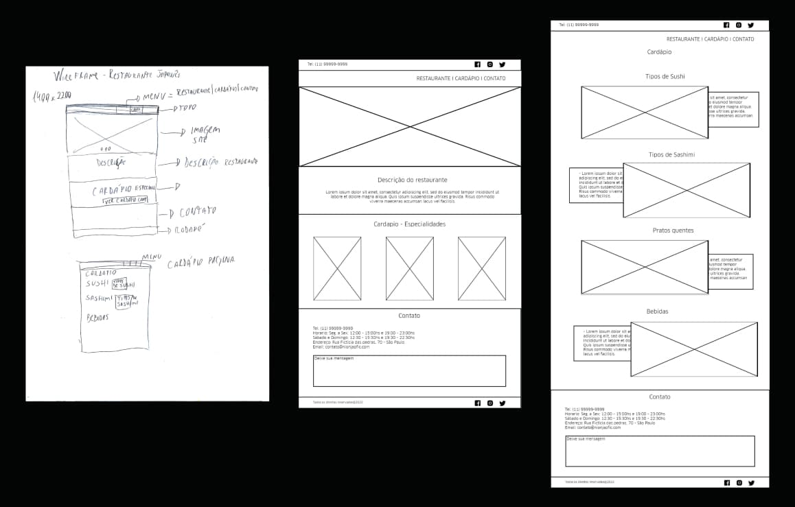
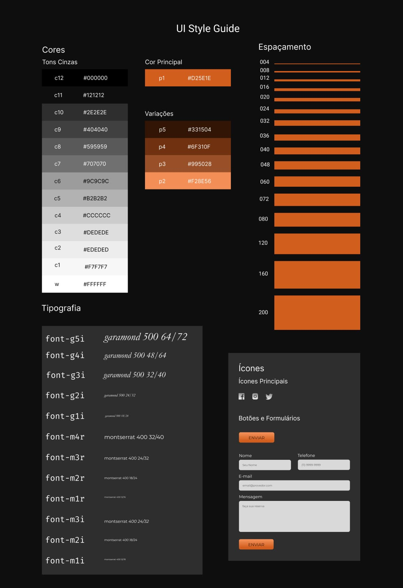
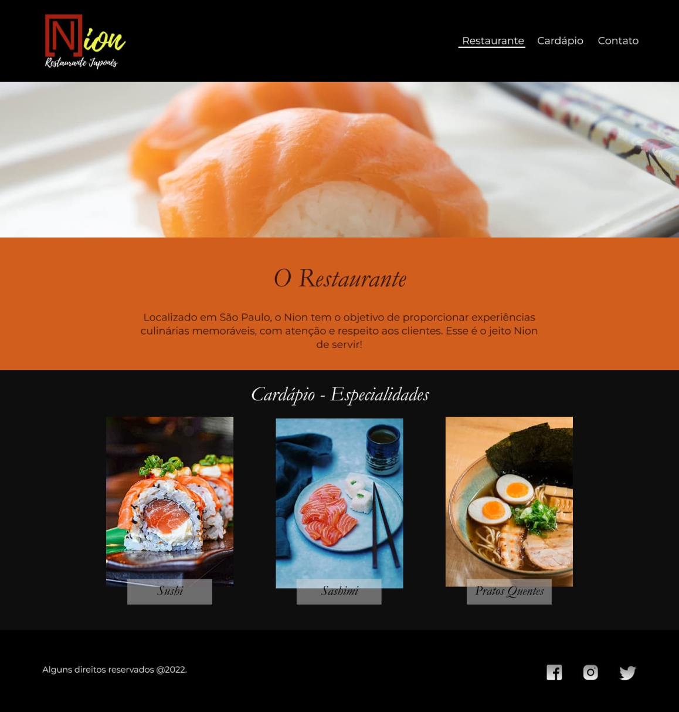
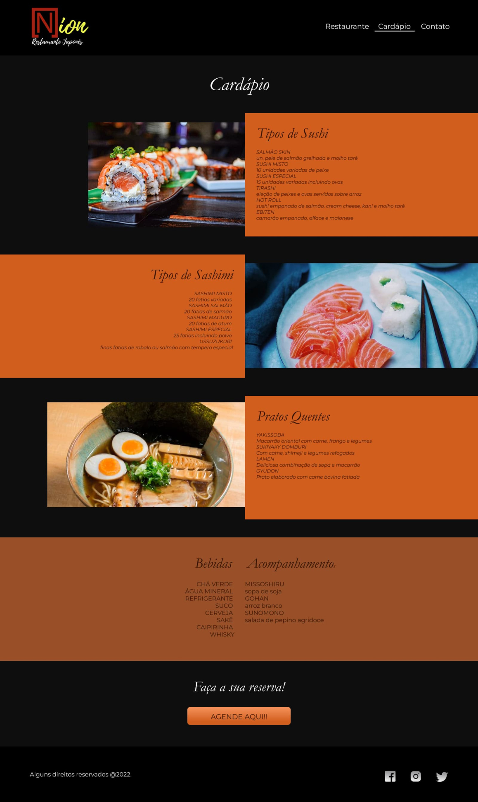
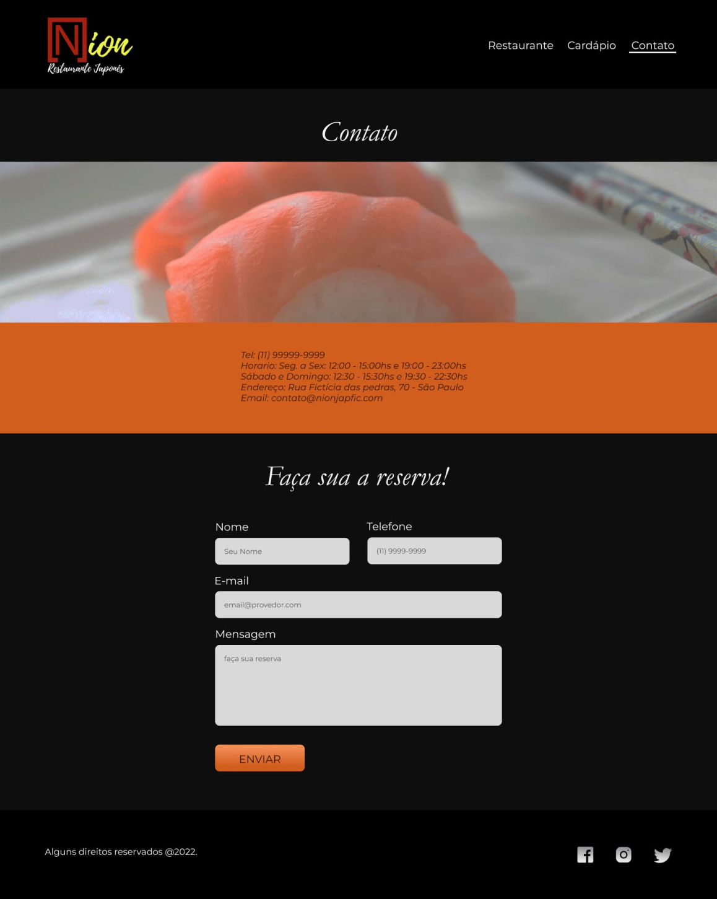

Nion - Restaurante Japonês
O Projeto
O Nion é um projeto de criação de um site fictício para um restaurante japonês, onde seu principal objetivo com a criação do site era a divulgação da marca e do contato, para que futuros clientes pudessem conhecê-los e que antigos pudessem acompanhar as mudanças no cardápio.
Método

O método de desenvolvimento usado foi o Design Thinking, sendo uma metodologia que permite a criação de soluções inovadoras e diferenciadas, aplicáveis. Para qualquer tipo de problema, desde questões empresariais até problemas sociais.
As etapas do Design Thinking são interconectadas e iterativas. O que significa que a equipe pode passar de uma fase para outra e voltar atrás se necessário. As cinco etapas do Design Thinking são Empatia, Definição do Problema, Ideação, Prototipagem e Teste.
Etapas e suas entregas
Empatia
A primeira fase do Design Thinking é a Empatia, que é o processo de entender o usuário e suas necessidades. Nesta fase, a equipe deve realizar pesquisas e entrevistas com usuários. Observar seus comportamentos e identificar suas necessidades, desejos e desafios. Esta fase é crucial para a compreensão do problema. E para a criação de soluções que atendam às necessidades reais do usuário.
Neste projeto será usado a Matriz CSD, para fazer levantamentos e fazer um plano de ação para os primeiros passos. Logo após os direcionamento decidido, será necessário fazer uma pesquisa e a criação de uma persona, pera reforçar quais são os problemas a serem resolvidos com este aplicativo.
Definição do problema
Após a fase de Empatia, a equipe deve definir o problema a ser resolvido. Nesta fase, a equipe deve analisar todas as informações coletadas durante a fase de Empatia. E identificar as necessidades e desejos mais importantes dos usuários. É importante definir o problema de forma clara e concisa, para que a equipe possa se concentrar na solução correta.
Ideação
A terceira fase do Design Thinking é a Ideação, que é o processo de gerar ideias para resolver o problema. Nesta fase, a equipe deve se concentrar em gerar uma grande quantidade de ideias. Sem se preocupar com a sua viabilidade ou implementação. O objetivo é criar um ambiente livre de julgamentos e incentivar a criatividade.
Prototipagem
O objetivo da fase de Prototipagem é testar as soluções para identificar possíveis problemas e refiná-las antes da implementação.
Algumas das técnicas utilizadas na fase de Prototipagem incluem a criação de protótipos de papel, que são representações simples da solução em papel. E a prototipagem rápida, que é uma técnica para criar protótipos de baixa fidelidade rapidamente
Protótipos de Baixa, Média e Alta fidelidade serão usados no desenvolvimento.
Teste
Processo de testar os protótipos com os usuários reais dentro do público alvo e obter feedback para aprimorar a solução.
Etapa 1 - Empatia
Ínicio das Ideias
Para entender melhor as necessidades do cliente e quais caminhos tomar, foi usada a Matriz CSD, como ponto de partida

Com isso, pôde-se elaborar um plano de ação inicial.

Benchmark
Para entender melhor o que a concorrência estava fazendo, foi feito uma pesquisa de Benchmark e essa pesquisa, baseada em sites concorrentes, o Kobu, Restaurante Hiro e o Nakato, nos mostrou alguns pontos em comum, que podem ser usados para o desenvolvimento do site.
Persona
Para o desenvolvimento do produto, foi criada uma persona, que ajudou ne melhor identificação do público alvo. É possível identificar vários públicos, de acordo com a pesquisa de benchmark e observando a concorrência.
É possível ver que são todas as pessoas interessadas em comer comida japonesa, e que possuem acesso à internet. Normalmente, casais de 30 a 60 anos, adeptos da cultura japonesa, pessoas que gostam de frutos do mar, entre outras, que estão procurando um lugar para jantar.
Um bom exemplo é a persona desenvolvida abaixo.
Etapa 2 - Definições dos Problemas
Com base nas pesquisas de Benchmark e na análise de público alvo, foi identificado um problema. Este tipo de cliente costuma ter problema para conhecer novos lugares e agendar um jantar nesses restaurantes.
Normalmente, esse tipo de cliente está procurando um local para jantar, muitas vezes para uma ocasião especial e muitas vezes resolvem esse problema pedindo aos amigos uma indicação ou indo a restaurantes que já conhecem.
Isso nos mostra a extrema necessidade da presença online de restaurantes, seja por anúncios, sites, aplicativos e neste caso, como o restaurante em específico não tem um site, tem muita dificuldade em sua divulgação e agendamento, que hoje é feita apenas por telefone, por isso a criação do site é tão recomendada.
Etapa 3 - Ideação
O desenvolvimento do Projeto
Fluxo
O site se organizou desta maneira, tendo uma navegação entre as páginas por meio de um menu, localizado no topo da página. a página inicial possui uma área que leva até a área do cardápio. Na página de contato, ao enviar uma mensagem, o site é recarregado.
Etapa 4 - Prototipagem
Foi criado um site para atender as necessidades do cliente, sendo desenvolvido, a partir da análise do Briefing do cliente, do estudo da concorrência e de um levantamento do público do cliente. A princípio, nos primeiros rascunhos, com menu no topo que daria acesso para outras paginas, sendo explicado mais adiante, dando muita ênfase na praticidade do encontro das informações.
A página Inicial é composta pela descrição do restaurante, as especialidades do restaurante, que ao clicá-las você é lavado até a página de Cardápio.
Cores e Tipografia
As cores foram escolhidas para combinar com o logotipo da empresa. Já a tipografia, foram escolhidas as Fontes Garamond e Montserrat. A Tipografia Garamond foi usada nos títulos. Já a Montserrat, traz um ar mais limpo para o site, sendo mais fácil de ler, foi usada nos demais textos do site.
O Resultado
  Etapa 5 - Teste
É possível testá-lo pelo links:
Conclusão
De acordo com as pesquisas, as pessoas que mais procurariam esse site são pessoas interessadas em comida japonesa, que queiram uma refeição especial ou experimentar algo diferente.
Pelo local não ter nenhuma presença online, hoje é difícil esse público encontrar esse restaurante, por isso é indicada a criação de um site para agir como página de divulgação para conseguir atingir esse público, tendo uma página de entrada, uma página de cardápio e uma de contato, lembrando sempre de divulgar todas as redes sociais da empresa.
Após o desenvolvimento do site, é necessário observar seu público e verificar possíveis mudanças para otimizar seu conteúdo, com ferramentas de análise como o Google Analytics.